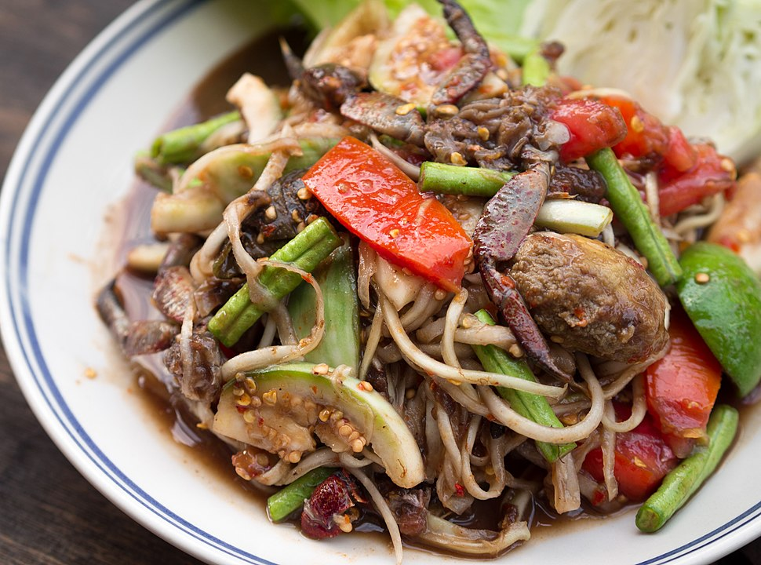

Green papaya salad

Description
Green Papaya Salad, known as Som Tum in Thailand, is a vibrant and refreshing dish that combines the crunch of shredded green papaya with a medley of flavors. It's a perfect balance of spicy, sweet, sour, and salty, making it an irresistible appetizer or side dish.
Ingredients
- Green papaya 1 medium-sized, peeled and shredded
- Cherry tomatoes 10, halved
- Green beans 1 cup, cut into 1-inch pieces
- Carrots 1, shredded (optional for extra colour and texture)
- Garlic 2 cloves, minced
- Bird's eye chilies 2-3, finely chopped (adjust to taste)
- Fish sauce 2 tablespoons
- Lime juice 3 tablespoons
- Palm sugar 1 tablespoon (or brown sugar as a substitute)
- Peanuts 1/4 cup, roasted and roughly chopped
- Fresh cilantro A handful, chopped (optional for garnish)
Steps
- Prepare the papaya
- Make the dressing
- Combine the ingredients
- Add peanuts and cilantro
- serve
Back to home